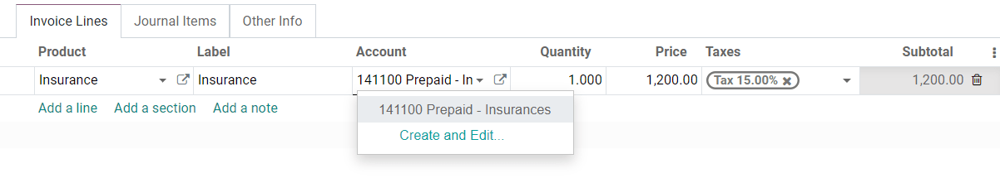
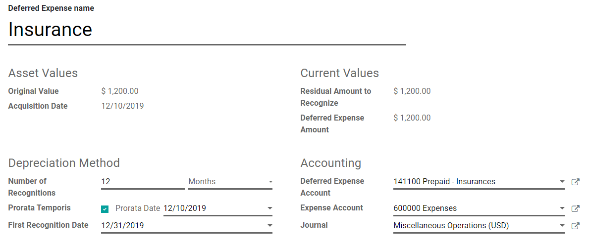
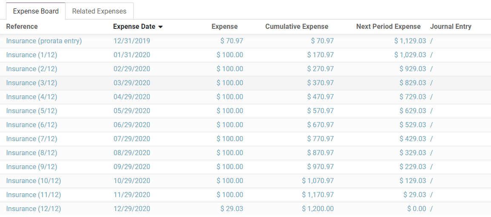
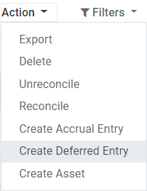
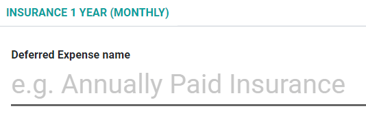

Deferred expenses and prepayments¶
Deferred expenses and prepayments (also known as prepaid expense), are both costs that have already occurred for unconsumed products or services yet to receive.
Such costs are assets for the company that pays them since it already paid for products and services still to receive or that are yet to be used. The company cannot report them on the current Profit and Loss statement, or Income Statement, since the payments will be effectively expensed in the future.
These future expenses must be deferred on the company’s balance sheet until the moment in time they can be recognized, at once or over a defined period, on the Profit and Loss statement.
For example, let’s say we pay $ 1200 at once for one year of insurance. We already pay the cost now but haven’t used the service yet. Therefore, we post this new expense in a prepayment account and decide to recognize it on a monthly basis. Each month, for the next 12 months, $ 100 will be recognized as an expense.
Odoo Accounting handles deferred expenses and prepayments by spreading them in multiple entries that are automatically created in draft mode and then posted periodically.
Note
The server checks once a day if an entry must be posted. It might then take up to 24 hours before you see a change from draft to posted.
Prerequisites¶
Such transactions must be posted on a Deferred Expense Account rather than on the default expense account.
Configure a Deferred Expense Account¶
To configure your account in the Chart of Accounts, go to , click on Create, and fill out the form.

Note
This account’s type must be either Current Assets or Prepayments
Post an expense to the right account¶
Select the account on a draft bill¶
On a draft bill, select the right account for all the products of which the expenses must be deferred.
Choose a different Expense Account for specific products¶
Start editing the product, go to the Accounting tab, select the right Expense Account, and save.

Tip
It is possible to automate the creation of expense entries for these products (see: Automate the Deferred Expenses).
Change the account of a posted journal item¶
To do so, open your Purchases Journal by going to , select the journal item you want to modify, click on the account, and select the right one.

Deferred Expenses entries¶
Create a new entry¶
A Deferred Expense entry automatically generates all journal entries in draft mode. They are then posted one by one at the right time until the full amount of the expense is recognized.
To create a new entry, go to , click on Create, and fill out the form.
Click on select related purchases to link an existing journal item to this new entry. Some fields are then automatically filled out, and the journal item is now listed under the Related Expenses tab.
Once done, you can click on Compute Deferral (next to the Confirm button) to generate all the values of the Expense Board. This board shows you all the entries that Odoo will post to recognize your expense, and at which date.
What does “Prorata Temporis” mean?¶
The Prorata Temporis feature is useful to recognize your expense the most accurately possible.
With this feature, the first entry on the Expense Board is computed based on the time left between the Prorata Date and the First Recognition Date rather than the default amount of time between recognitions.
For example, the Expense Board above has its first expense with an amount of $ 70.97 rather than $ 100.00. Consequently, the last entry is also lower and has an amount of $ 29.03.
Deferred Entry from the Purchases Journal¶
You can create a deferred entry from a specific journal item in your Purchases Journal.
To do so, open your Purchases Journal by going to , and select the journal item you want to defer. Make sure that it is posted in the right account (see: Change the account of a posted journal item).
Then, click on Action, select Create Deferred Entry, and fill out the form the same way you would do to create a new entry.
Deferred Expense Models¶
You can create Deferred Expense Models to create your Deferred Expense entries faster.
To create a model, go to , click on Create, and fill out the form the same way you would do to create a new entry.
Tip
You can also convert a confirmed Deferred Expense entry into a model by opening it from and then, by clicking on the button Save Model.
Apply a Deferred Expense Model to a new entry¶
When you create a new Deferred Expense entry, fill out the Deferred Expense Account with the right recognition account.
New buttons with all the models linked to that account appear at the top of the form. Clicking on a model button fills out the form according to that model.
Automate the Deferred Expenses¶
When you create or edit an account of which the type is either Current Assets or Prepayments, you can configure it to defer the expenses that are credited on it automatically.
You have three choices for the Automate Deferred Expense field:
No: this is the default value. Nothing happens.
Create in draft: whenever a transaction is posted on the account, a draft Deferred Expenses entry is created, but not validated. You must first fill out the form in .
Create and validate: you must also select a Deferred Expense Model (see: Deferred Expense Models). Whenever a transaction is posted on the account, a Deferred Expenses entry is created and immediately validated.
Tip
You can, for example, select this account as the default Expense Account of a product to fully automate its purchase. (see: Choose a different Expense Account for specific products).
See also